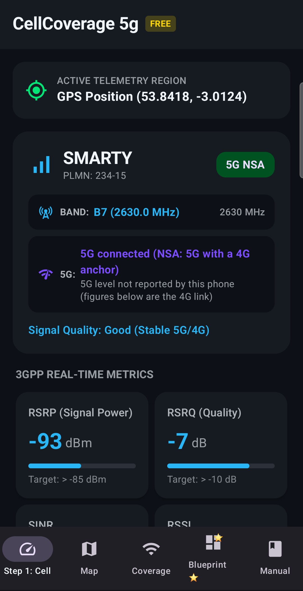
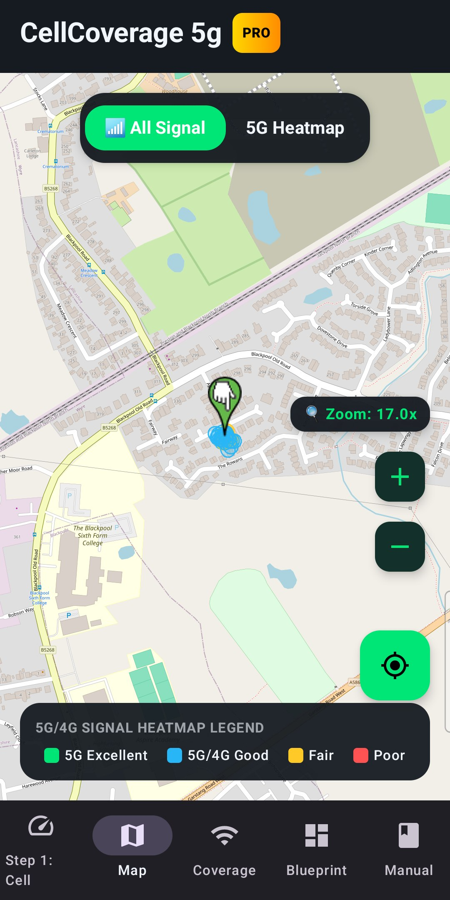
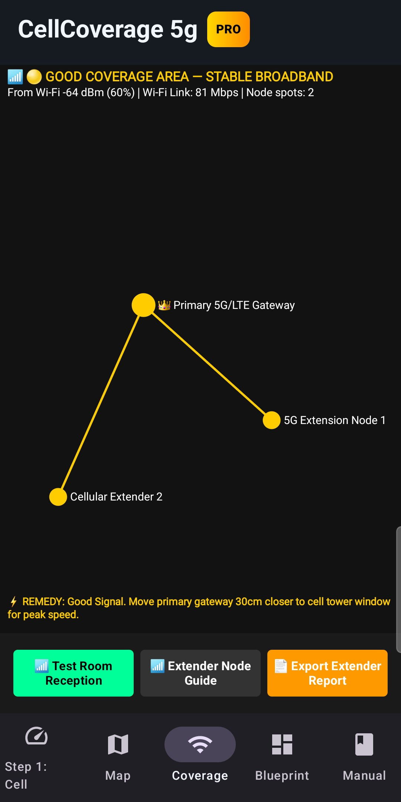
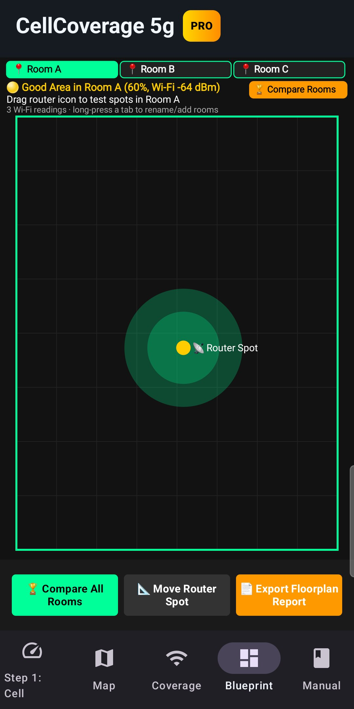
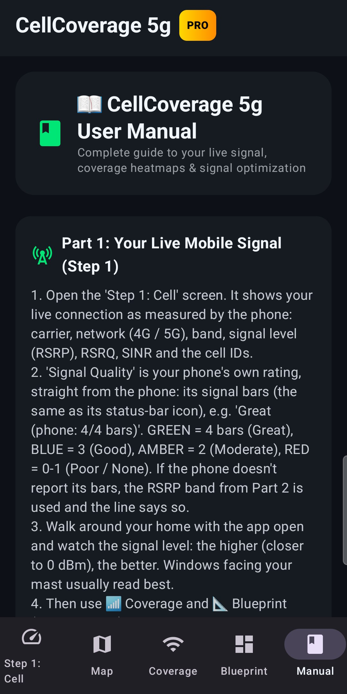

📱 Application Interface & Screenshots
Explore the 5 screens of CellCoverage 5g & WaveScan Pro. Every value shown is measured live by your own phone:

1. Step 1: Cell (FREE)
Your live connection: carrier, 4G / 5G (NSA or SA), band, RSRP, RSRQ, SINR and RSSI, with targets to aim for.

2. Coverage Map (FREE)
OpenStreetMap showing your own signal readings as coloured rings where you've walked, plus a 5G Heatmap switch.

3. 📶 Coverage (FREE)
Test the reception in each room from your live Wi-Fi or mobile signal, and see where an extender or mesh node would help.

4. 📐 Blueprint (PRO)
Record real readings room by room, then Compare All Rooms to find the best room for your router.

5. User Manual
Step-by-step guide to every screen, the 3GPP signal figures, band switching and router / antenna placement.
⚡ What's Included: Free & Pro
| Key Feature | CellCoverage 5g (WaveScan Pro) | FREE | PRO |
|---|---|---|---|
| Live Signal (Step 1) | ✅ Carrier, 4G / 5G, band, RSRP, RSRQ, SINR, RSSI | ✅ | ✅ |
| Coverage Map & 5G Heatmap | ✅ Your own readings on OpenStreetMap | ✅ | ✅ |
| 📶 Room Coverage & Extender Guide | ✅ Live Wi-Fi or mobile signal | ✅ | ✅ |
| 📐 Multi-Room Blueprint & Room Compare | ✅ Rooms ranked by measured signal | ❌ | ✅ |
| PDF Report Export / Share | ✅ Email, WhatsApp & more | ❌ | ✅ |
📖 Complete Field Operating Instructions
📖 CellCoverage 5g User Manual
Complete guide to cell tower finding, heatmaps & signal optimization
Part 1: Finding Your Optimal Cell Tower (Step 1)
1. Open the 'Step 1: Cell' screen. It shows your live connection as measured by the phone: carrier, network (4G / 5G), band, signal level (RSRP) and quality, and the cell IDs.
2. Walk around your home with the app open and watch the signal level: the higher (closer to 0 dBm), the better. Windows facing your mast usually read best.
3. Then use 📶 Coverage and 📐 Blueprint (Parts 3 and 4) to compare rooms and find the best spot for your router.
Part 2: Coverage Map & Signal Heatmaps (100% FREE)
1. Open the 'Map' tab. The map centers on your current GPS location and shows your own signal readings as colour-coded coverage rings wherever you have walked with the app open (EXPERIMENTAL: GPS is accurate to about 5-15 m). Android does not report where cell towers are, so towers are not drawn. Tap '5G Heatmap' at the top to see where you had 5G: coloured by 5G strength when your phone reports it, purple = 5G but this phone does not report the 5G level (e.g. Samsung), grey = no 5G (4G only).
2. Color-Coded Signal Heatmap Legend:
• 🟢 Green: 5G Excellent (RSRP > -85 dBm)
• 🔵 Blue: 5G/4G Good (RSRP -85 to -95 dBm)
• 🟡 Amber: Fair (RSRP -95 to -105 dBm)
• 🔴 Red: Poor (RSRP < -105 dBm)
(These colours show signal strength. Whether you were on 5G is shown by the '5G Heatmap' switch.)
3. Use the '+' and '-' zoom buttons to zoom down to street level (17.0x) or zoom out to see a wider area.
Part 3: 📶 Cellular Signal Coverage & Extension Map (FREE)
1. Tap '📶 Coverage'. Walk to the room or space furthest from your primary router.
2. The diagram and colours follow your live Wi-Fi reading (or mobile signal if Wi-Fi is off); the line under the heading shows which, e.g. 'From Wi-Fi -59 dBm'. Tap '📶 Test Room Reception' for the diagnosis:
- Flashing Neon Green: '🔥 EXCELLENT RECEPTION (No extension nodes needed)'.
- Amber: '⚡ GOOD RECEPTION (Move router 30cm closer to window)'.
- Red: '⚠️ WEAK SIGNAL DEAD-ZONE! FITMENT OF A CELLULAR EXTENDER / MESH NODE RECOMMENDED HERE.'
3. '🧪 Test Weak Signal' shows what the dead-zone display looks like (-95 dBm simulation, clearly labelled); switch back to live afterwards.
4. '📶 Extender Node Guide': place the extension node about halfway between your router and the dead-zone.
5. '📄 Export Extender Analysis' (PRO) shares a PDF report of the readings.
Part 4: 📐 Room Selection & Blueprint Modeler (PRO)
1. Tap '📐 Blueprint'. Select Room A, Room B, or Room C at the top (long-press a tab to rename it or add rooms).
2. Walk to that room. Touch and drag the Yellow Router Icon (📡) to where you're standing and let go: a real reading is recorded for that room. Take at least 3 readings per room.
3. The header shows the room's measured rating: 🟢 Excellent or Good, 🟡 Fair or 🔴 Avoid. With only one room measured there's nothing to compare yet.
4. Tap '🏆 Compare All Rooms' to view the leaderboard. Rooms are ranked by their median measured signal; rooms with no readings are listed as not measured.
5. Physical Motion Warning: if you switch room tabs without walking (< 3m moved, from GPS), a warning reminds you to walk to that room for an accurate reading.
6. '📄 Export Floorplan Analysis' shares the leaderboard as a PDF report.
Part 5: Understanding 3GPP Signal Telemetry
• RSRP (Signal Power): Target > -85 dBm for ultra-fast 5G broadband. Anything below -105 dBm indicates weak signal.
• RSRQ (Signal Quality): Target > -10 dB. Measures signal purity.
• SINR (Signal-to-Noise Ratio): Target > 15 dB. Higher SINR results in faster download/upload speeds.
• Band n78 (3,500 MHz): High-speed 5G C-Band (requires clear line-of-sight).
• Band n28 / B20 (700-800 MHz): Long-range coverage band for rural areas or penetrating thick walls.
Part 6: Radio Band Switch & Network Selection
1. Dial `*#*#4636#*#*` on your phone dialer to open the Android Radio Testing screen (not available on every phone).
2. Under 'Set Preferred Network Type':
- Select 'NR/LTE' for 5G/4G broadband.
- Select 'LTE Only' to force your phone off congested 5G cells onto alternative 4G LTE towers.
3. Under 'Network Operators' in Android Settings, turn off 'Select Automatically' to manually search and register onto alternative carrier cell towers!
Part 7: 5G/LTE Home Gateway & Yagi Antenna Alignment
1. Find the window or wall where your signal reads highest (Step 1, 📶 Coverage or 📐 Blueprint).
2. Point your 5G/LTE outdoor directional Yagi/MIMO antenna or place your home gateway router at that window.
3. Log into your router admin panel (e.g. 192.168.1.1) and if it allows band locking, lock onto the band that gives you the best results (Step 1 shows the band you are on now).
Part 8: Important Disclaimer — Signal Discrepancies FAQ
While the incoming radio waves are the same, the hardware and software on the phone change how that data is interpreted.
1. Signal Quality Differences (The Hardware Factor)
The exact same cell tower can read completely differently on two different brands sitting side by side due to the physical components inside:
• The Modem and Antenna: Premium brands use high-end modems paired with precisely engineered antenna bands woven into the phone's frame. Budget brands often use alternative modems and less efficient internal antennas. This means a premium phone might maintain a clean, strong connection, while a budget phone sees a degraded, noisy signal from the exact same tower.
• Signal Smoothing (Software): What you see on your screen is heavily manipulated by software. Some manufacturers apply aggressive software filtering to smooth out signal drops so the user doesn't see their signal bars wildly jumping around. One brand might report a signal as stable but weak, while another reports it as highly volatile.
2. Bearing and Directional Data (Angle of Arrival)
Calculating the exact bearing (the direction or angle from the phone to the cell tower) is complex and varies by brand and network generation:
• Angle of Arrival (AoA): Modern 5G and advanced 4G networks use a technique called Angle of Arrival. The cell tower uses its antenna arrays to measure the exact angle at which your phone’s signal hits it. However, the phone itself doesn't naturally know the direction of the tower; it only knows it is receiving a signal.
• How Brands Calculate Bearing: To estimate a bearing to a cell tower from the phone's side, the device has to combine cellular signal data with its internal compass (magnetometer) and gyroscope.
• The Sensor Calibration Issue: This is where brands differ significantly. High-end phones continuously calibrate their internal compasses using GPS data in the background. Other devices may have uncalibrated or different quality magnetometers. If the phone's internal compass is misaligned, telemetry apps trying to map the phone's bearing relative to local cell towers may experience inaccuracies.
Summary of What Changes Across Brands:
• Premium Brands: Provide refined internal sensor data (compass/gyro), meaning software can map bearings to towers more reliably. Their modems pull in a cleaner signal.
• Budget Brands: May have sensor drift (the compass loses true north easily), making directional telemetry less accurate. Their modems can be more prone to signal interference, which affects location accuracy.
Please use the features and various metrics provided in this app as a collective guide only.
Part 9: Application Information & Version
• Application Name: CellCoverage 5g & WaveScan Pro
• Version: v1.6 (Build 7)
• Package ID: com.cellcoverage5g
• Pro: bought through Google Play (monthly subscription or one-time lifetime). Purchases are restored automatically on reinstall; manage or cancel subscriptions in Google Play › Payments & subscriptions.
• Developer: AppStack Studio
• Official Customer Support: appstack1966@gmail.com
• Official Website: https://daverimmeruk.github.io/appstack-studio/